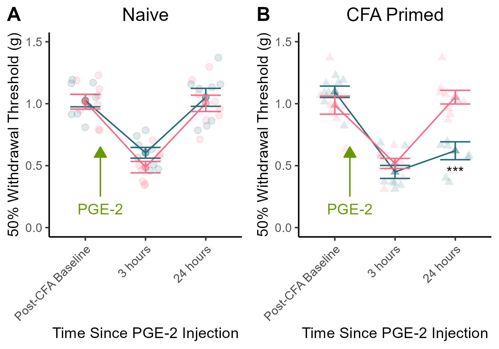

Supplemental Figure 3 - Sex Differences in Hyperalgesic Priming
Priming was induced by CFA.
Expression of priming was elicited by 100ng PGE-2 administration at the site of previous injury.
Published Image

Figure S3. Sex differences in PGE-2-induced expression of Hyperalgesic priming. (A) There is no sex difference in the magnitude of mechanical sensitivity induced by PGE-2 administration in naive mice. (B) Among CFA-primed mice, males exhibit more sensitivity than females 24 hours post PGE-2 administration. Data expressed as mean value +/- SEM, *** indicates p < 0.001.
Statistics
a <- m_Left[m_Left$CFA == "CFA", ]
b <- m_Left %>%
filter(CFA == "CFA") %>%
group_by(variable) %>%
pairwise_t_test(value~Sex)
tt(b)| variable | .y. | group1 | group2 | n1 | n2 | p | p.signif | p.adj | p.adj.signif |
|---|---|---|---|---|---|---|---|---|---|
| Post-CFA Baseline | value | Male | Female | 8 | 8 | 0.232000 | ns | 0.232000 | ns |
| 3 hours | value | Male | Female | 8 | 8 | 0.319000 | ns | 0.319000 | ns |
| 24 hours | value | Male | Female | 8 | 8 | 0.000306 | *** | 0.000306 | *** |
- 24 hours after PGE-2 administration, CFA-primed males exhibit ongoing hypersensitivity, whereas CFA-primed females do not.